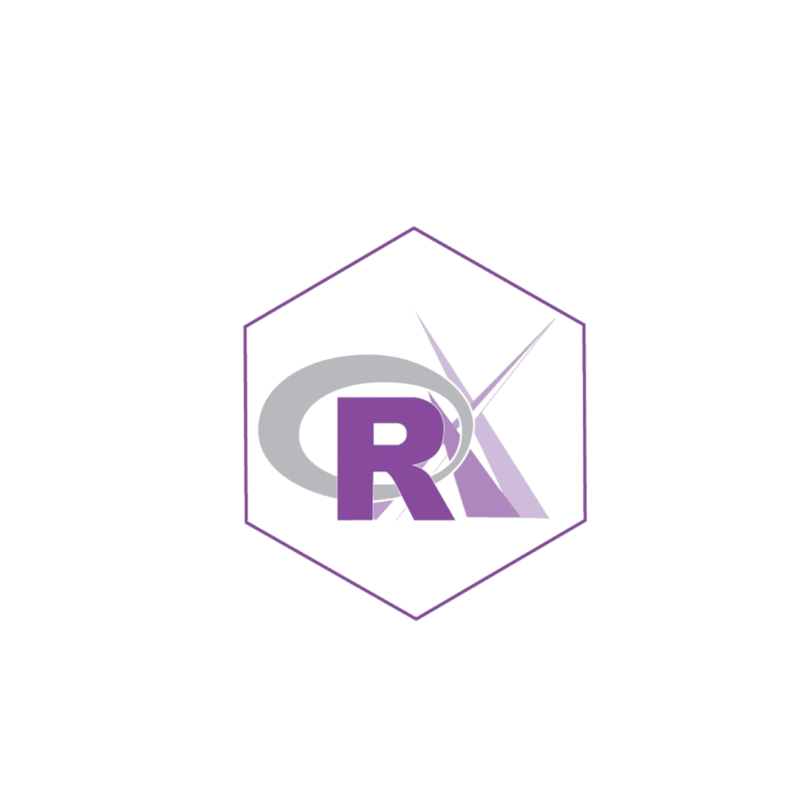

Bate-papo R-Ladies
R-Ladies
Este bate-papo é um espaço de troca sobre visualização de dados na prática.
Não existe receita única. Existe repertório, prática e comunidade.
Trajetória profissional e conexão com visualização de dados
Como a visualização entrou na prática do dia a dia
O que mudou na forma de trabalhar depois de desenvolver essa habilidade
Dados sem comunicação não geram decisão
A forma como você apresenta um resultado determina se ele será usado
Visualização é a ponte entre análise e ação
Não é sobre estética. É sobre clareza e precisão
Note
A visualização de dados apresenta informações densas e complexas em formato gráfico, facilitando comparações e auxiliando na tomada de decisões.
Aprender em público acelera o processo
Feedback real de pessoas que enfrentam os mesmos problemas
Exposição a abordagens diferentes do que você conhece
Conexões que não acontecem em cursos convencionais
Acesso a projetos reais antes de ter experiência formal
Visibilidade para quem está contratando
Aprendizado contínuo sem custo financeiro
Rede de pessoas dispostas a ajudar
O TidyTuesday é uma iniciativa semanal da comunidade de R criada e mantida por Jon Harmon e colaboradores da Data Science Learning Community.
Todo ano começa e termina com um dataset especial. O restante do ano tem um dataset novo por semana.
Repositório oficial: github.com/rfordatascience/tidytuesday
Como funciona:
Como participar:
#TidyTuesday no LinkedIn e no MastodonTip
Participar de um desafio por semana por três meses é mais formativo do que assistir a horas de curso sem praticar.
| Dimensão | Sozinho | Com comunidade |
|---|---|---|
| Feedback | Nenhum ou atrasado | Imediato e diverso |
| Repertório | Limitado ao que você busca | Expandido pelo que outros trazem |
| Visibilidade | Zero | Crescente |
| Motivação | Depende de você | Sustentada pelo grupo |
O TidyTuesday não é só um desafio. É um treino semanal com dados reais, sem pressão de entrega e com audiência real.
O que você desenvolve ao longo do tempo:
#30DayChartChallenge: um gráfico por dia durante 30 dias em abril. Tema diferente a cada dia.
#30DayMapChallenge: variação focada em mapas durante novembro.
Makeover Monday: reformular visualizações existentes com dados reais.
Observable Plot Gallery: exploração livre com a biblioteca Observable.
R
ggplot2: padrão de mercado para visualização estáticaplotly: interatividade com sintaxe familiargganimate: animações sobre gráficos ggplot2ggridges, ggbeeswarm, ggdist: extensões especializadasPython
matplotlib: base de tudo, altamente configurávelseaborn: API de alto nível sobre matplotlibplotly: interatividade e dashboardsaltair: gramática declarativa de visualizaçãobokeh: visualizações interativas para webTrês movimentos que mudam o nível:
Cédric Scherer: data visualization designer, referência em ggplot2 avançado cedricscherer.com
Georgios Karamanis: TidyTuesday e visualizações incomuns github.com/gkaramanis
Cara Thompson: dados e design aplicados a comunicação cararthompson.com
Nicola Rennie: TidyTuesday, Shiny e Quarto nrennie.rbind.io
Tanya Shapiro: visualizações detalhadas com ggplot2 e R github.com/tashapiro
Albert Rapp: tutoriais de ggplot2 e Quarto com profundidade técnica albert-rapp.de
Yan Holtz: criador do R Graph Gallery e Python Graph Gallery yan-holtz.com
Nathan Yau: FlowingData, jornalismo de dados e visualização aplicada flowingdata.com
Salvar não adianta. Reproduzir sim.
Reserve tempo semanal para recriar uma visualização que você admira
Anote o que funcionou, o que você mudaria e por que
Repositórios de referência:
Não comece pelo gráfico. Comece pela pergunta.
Important
Um gráfico tecnicamente correto que não comunica para o público certo é um gráfico que falhou.
A gramática de gráficos do ggplot2 é baseada em camadas:
Análise exploratória
plot(), hist(), ggplot() básicoVisualização comunicativa
Uma visualização que conta uma história tem:
O título do gráfico não deve descrever o que está representado. Deve comunicar a conclusão.
Tip
Título fraco: “Vendas por região em 2023”
Título forte: “Norte concentra 40% das vendas, mas recebe apenas 15% do investimento”
GitHub:
LinkedIn:
O resultado final esconde o aprendizado. O processo expõe a competência.
Mostre:
Quem contrata quer ver como você pensa. Não só o que você entrega.
Portfólio não é currículo com imagens.
É evidência de como você pensa, resolve problemas e comunica resultados.
Um projeto publicado com uma decisão bem justificada vale mais do que dez projetos guardados esperando o momento certo.
Esperando a perfeição:
Publicando com consistência:
Important
O portfólio que ninguém vê não abre nenhuma porta.
ggplot2Não espere estar pronta. O aprendizado acontece publicando.
Comunidade não é bônus. É parte do método.
Aprender visualização de dados tem dois componentes insubstituíveis:
Prática: fazer gráficos toda semana, independente de serem perfeitos.
Exposição: publicar o que você faz e receber feedback real.
Nenhum curso substitui os dois juntos.
Obrigada, Agatha.

R-Ladies | Visualização de Dados na Prática